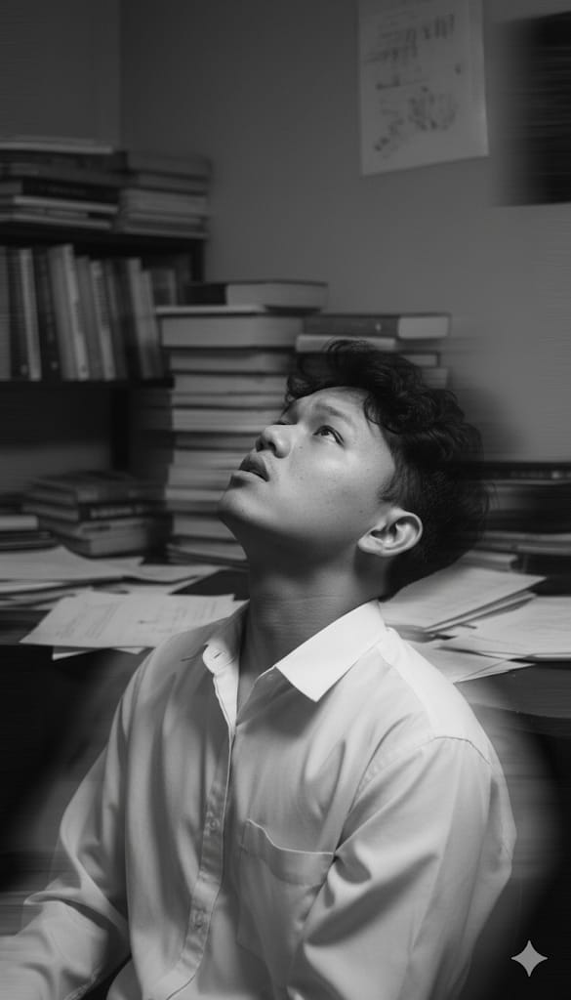
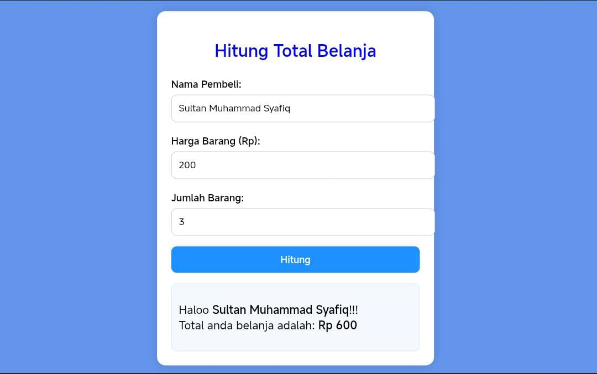
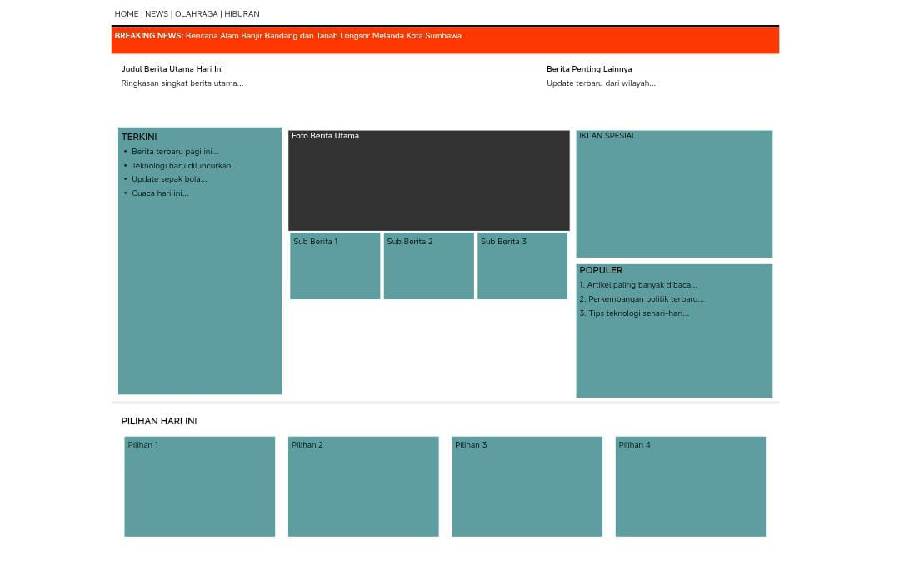
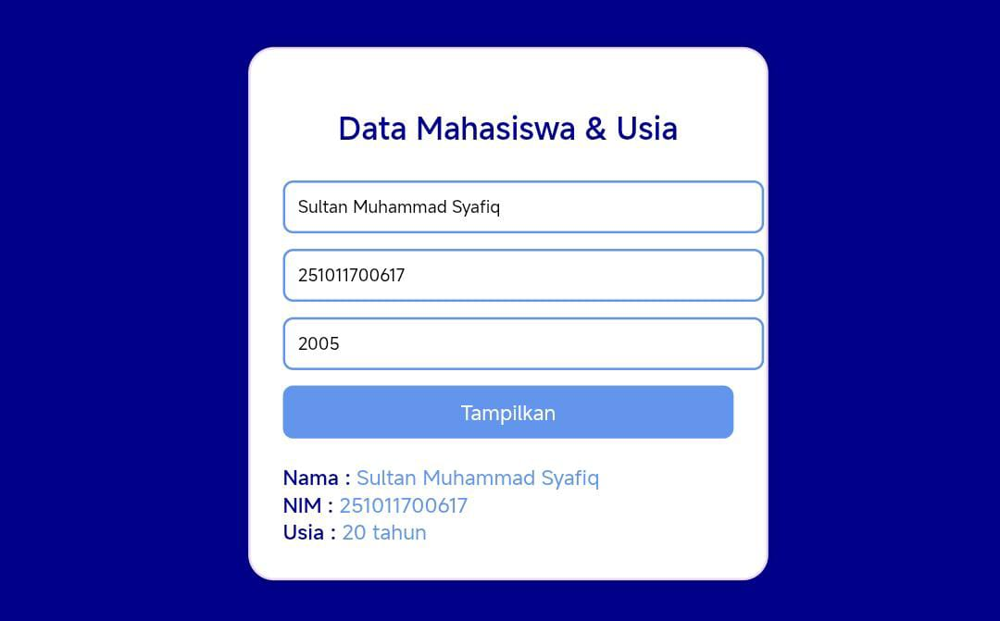

Web Developer & UI/UX Designer
Lihat KaryaSaya adalah mahasiswa Sistem Informasi Universitas Pamulang yang memiliki ketertarikan besar di dunia teknologi, khususnya dalam pengembangan website dan desain UI/UX. Dengan latar belakang di bidang multimedia, saya terbiasa memadukan unsur visual dengan fungsi agar menghasilkan tampilan digital yang menarik, rapih, dan mudah digunakan. Saya berusaha mengembangkan kemampuan dan pengalaman untuk menciptakan karya yang tidak hanya enak dilihat, tetapi juga nyaman bagi pengguna.

Membuat Website total belanja untuk menghitung harga dan jumlah barang yang akan di totalkan.

Membuat desain atau gambaran awal sebelum menjadi website berita serta isinya.

Membuat web data mahasiswa dan usia, untuk mengetahui usia dari setiap mahasiswa.
Hubungi Saya Melalui: